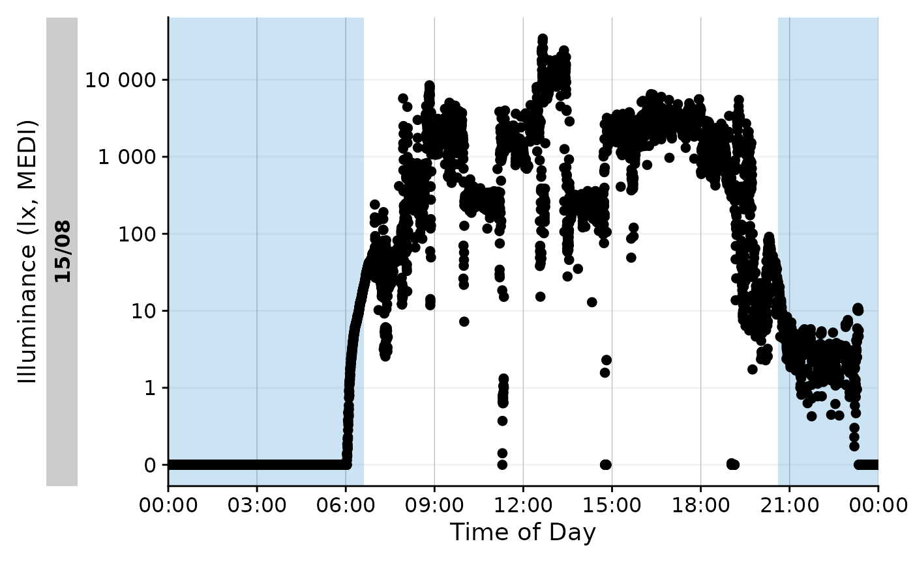

This article focuses on two important aspects of light logger analysis: structuring data into relevant groups and calculating personal light exposure metrics for them. LightLogR contains a large set of over 60 metrics and sub-metrics across multiple functions, where each constitutes a family of light exposure metrics. The following packages are needed for the analysis:
Importing Data
We will use data imported and cleaned already in the article Import & Cleaning.
data <- readRDS("cleaned_data/ll_data.rds")As can be seen by using gg_overview(), the dataset
contains 17 ids with one weeks worth of data each, and one to three
participants per week.
data %>% gg_overview()Metric principles
There are a lot of metrics associated with personal light exposure. You can find the function reference to all of them in the appropriate reference section. There are a few important distinctions between metrics that are important to understand:
Some metrics require or work best with a specific time frame, usually one day, while others are calculated over an arbitrary length of time. For example, the function
interdaily_stability()calculates a metric over multiple days, while a function likemidpointCE()calculates the midpoint of the cumulative light exposure within the given time series - this is less useful for multiple days, where the midpoint is just a time point during these days. E.g., for two similar light exposure patterns across two days, the cumulative light exposure across those two days will be around midnight, which is not particularly informative. Much more sensible is the midpoint of the light exposure for each day. To enable this, data has to be grouped within days (or other relevant time frames, like sleep/wake-phase).Some metrics are submetrics within a family and have to be actively chosen through the arguments of the function. An example is
duration_above_threshold()that, despite its name also provides the metricsduration below thresholdandduration within threshold. Depending on itscomparisonargument, and whether one or twothresholds are provided, the function will calculate different metrics.Some metric functions calculate multiple submetrics at once, like
bright_dark_period(). As stated above, this type of function contains metrics accessible through a function argument,periodin this case, which allows to specify whether the brightest or darkest periods of the day are required. Independent of this, the function will calculate multiple submetrics at once, which are theonset,midpoint, andoffsetof the respective period, and also themeanlight level during that period.
We will cover the practical considerations following from these aspects in the following sections. Further, every function documentation explicitly states whether different metrics are accessible through parameters, and which metrics are calculated by default.
Metric calculation: basics
All metric functions are by default agnostic to the type of data. They require vectors of light data and commonly also of datetimes. This means that the functions can be used outside of the LightLogR framework, if applied correctly. Let us try this with a simple example for a days worth of light data for one participant across two functions.

Time above threshold (TAT)
The first example metric we will calculate is the time above
threshold (or TAT) for a threshold of 250 lx mel EDI. TAT is
calculated by the function duration_above_threshold().
duration_above_threshold(
Light.vector = data_Id201$MEDI,
Time.vector = data_Id201$Datetime,
threshold = 250
)
#> [1] "34500s (~9.58 hours)"Specifying the argument comparison = "below" will
calculate the time below the threshold.
duration_above_threshold(
Light.vector = data_Id201$MEDI,
Time.vector = data_Id201$Datetime,
threshold = 250,
comparison = "below"
)
#> [1] "51900s (~14.42 hours)"And specifying two thresholds will calculate the time within the thresholds.
duration_above_threshold(
Light.vector = data_Id201$MEDI,
Time.vector = data_Id201$Datetime,
threshold = c(10,250)
)
#> [1] "15320s (~4.26 hours)"Brightest 10 hours of the day (L10)
The second example metric yields multiple submetrics at once. The
function bright_dark_period() calculates the brightest and
darkest periods of the day. By default, it calculates the brightest 10
hour period of the day. By setting as_df = TRUE, the
function will return a data frame we can pipe to gt() for a
nice output
bright_dark_period(
Light.vector = data_Id201$MEDI,
Time.vector = data_Id201$Datetime,
as.df = TRUE
) %>% gt()| brightest_10h_mean | brightest_10h_midpoint | brightest_10h_onset | brightest_10h_offset |
|---|---|---|---|
| 2506.202 | 2023-08-15 13:42:01 | 2023-08-15 08:42:11 | 2023-08-15 18:42:01 |
Looping
Calculating the darkest period of the day is tricky, as it likely traverses midnight. In the following code we can see that the darkest 10-hour period of day begins at midnight and ends at 10 am, which would be very coincidental. (Note that commonly, the darkest 5-hour period is calculated. We deviate from this to make this point.)
M10_wrong <-
bright_dark_period(
Light.vector = data_Id201$MEDI,
Time.vector = data_Id201$Datetime,
as.df = TRUE,
period = "darkest",
timespan = "10 hours"
)
M10_wrong %>% gt()| darkest_10h_mean | darkest_10h_midpoint | darkest_10h_onset | darkest_10h_offset |
|---|---|---|---|
| 305.2523 | 2023-08-15 04:59:51 | 2023-08-15 00:00:01 | 2023-08-15 09:59:51 |
We also see that this makes little sense, if we visualize this portion. The yellow color indicates the darkest 10-hour period of the day.
Onset <- M10_wrong$darkest_10h_onset
Offset <- M10_wrong$darkest_10h_offset
data_Id201 %>%
gg_day(aes_col = Datetime >= Onset & Datetime <= Offset) +
guides(color = "none")
To solve this, bright_dark_period() and some other
functions have the option to loop the day.
M10 <-
bright_dark_period(
Light.vector = data_Id201$MEDI,
Time.vector = data_Id201$Datetime,
as.df = TRUE,
period = "darkest",
timespan = "10 hours",
loop = TRUE
)
M10 %>% gt()| darkest_10h_mean | darkest_10h_midpoint | darkest_10h_onset | darkest_10h_offset |
|---|---|---|---|
| 1.423622 | 2023-08-15 01:36:51 | 2023-08-15 20:37:01 | 2023-08-15 06:36:51 |
This is more plausible, and can also be visualized easily.
Onset <- M10$darkest_10h_onset
Offset <- M10$darkest_10h_offset
data_Id201 %>%
gg_day(aes_col = Datetime >= Onset | Datetime <= Offset) +
guides(color = "none")
Metric calculation: advanced
More often than not, metrics are calculated for many participants
over prolonged periods of time. In this case, the singular calculation
as shown above is inefficient. The dplyr family of
dplyr::summarize() and dplyr::reframe() make
this much easier.
Preparation
As we only want to calculate metrics for days with full data, we will exclude Mondays from the data set.
Summarize
The dplyr::summarize() function is used to calculate
metrics for each group of data. In the following example, we will
calculate Interdaily Stability (IS) for all participants in the data
set, giving us the variability of the 24h light exposure patterns across
the full 6 days of data compared to their average, ranging between 0
(Gaussian noise) and 1 (Perfect stability). For brevity, only the first
6 Ids will be shown.
data %>%
summarize(
IS = interdaily_stability(
Light.vector = MEDI,
Datetime.vector = Datetime
)
) %>%
head() %>% gt() | Id | IS |
|---|---|
| 201 | 0.5263723 |
| 202 | 0.2058065 |
| 204 | 0.2759852 |
| 205 | 0.3332044 |
| 206 | 0.2453059 |
| 208 | 0.2007277 |
Grouping
By default, data imported with LightLogR is grouped by
Id, which represents individual participants. When using
the dplyr family of functions, grouping is essential, as it
specifies the subgroups of data for which the metrics are calculated. In
the following example, we will calculate the TAT 250 lx MEDI for all
participants in the data set. We only show the first 6 participants, as
it becomes readily apparent that time above threshold for 6 days might
not be the most informative parametrization of the metric.
data %>%
summarize(
TAT_250 = duration_above_threshold(
Light.vector = MEDI,
Time.vector = Datetime,
threshold = 250
)
) %>% head() %>% gt()| Id | TAT_250 |
|---|---|
| 201 | 160180s (~1.85 days) |
| 202 | 29970s (~8.32 hours) |
| 204 | 147340s (~1.71 days) |
| 205 | 98520s (~1.14 days) |
| 206 | 6320s (~1.76 hours) |
| 208 | 47140s (~13.09 hours) |
Instead, we can calculate the TAT 250 lx MEDI for each participant and day of data. This is more informative, as it allows us to see how the metric changes over time. The final output is for the first two Ids.
#create a new column in the data set with the weekday
data$wDay <- wday(data$Datetime, label = TRUE, week_start = 1)
#group the data and calculate the metrics
TAT_250 <-
data %>%
group_by(wDay, .add = TRUE) %>%
summarize(
TAT_250 = duration_above_threshold(
Light.vector = MEDI,
Time.vector = Datetime,
threshold = 250
), .groups = "drop_last"
)
TAT_250 %>% head(12) %>% gt()| wDay | TAT_250 |
|---|---|
| 201 | |
| Tue | 34500s (~9.58 hours) |
| Wed | 32780s (~9.11 hours) |
| Thu | 21820s (~6.06 hours) |
| Fri | 31670s (~8.8 hours) |
| Sat | 15010s (~4.17 hours) |
| Sun | 24400s (~6.78 hours) |
| 202 | |
| Tue | 18760s (~5.21 hours) |
| Wed | 6930s (~1.93 hours) |
| Thu | 200s (~3.33 minutes) |
| Fri | 200s (~3.33 minutes) |
| Sat | 3130s (~52.17 minutes) |
| Sun | 750s (~12.5 minutes) |
Metric statistics
With the dataframe TAT_250, we can easily calculate
statistics for each participant. This can be done manually, e.g., with
another call to dplyr::summarize(), or semi-automatic,
e.g., with packages like gtsummary. In the following
example, we will calculate the mean and standard deviation of the TAT
250 lx MEDI for each participant, formatted as HH:SS
through a styling function.
#styling formula for time
style_time <- function(x, format = "%H:%M"){
x %>% as.numeric() %>% hms::as_hms() %>% as.POSIXlt() %>% format(format)
}
#Table output
TAT_250 %>%
tbl_summary(by = Id, include = -wDay,
statistic = list(TAT_250 ~ "{mean} ({sd})"),
digits = list(TAT_250 ~ style_time),
label = list(TAT_250 = "Time above 250 lx mel EDI")
)| Characteristic | 201, N = 61 | 202, N = 61 | 204, N = 61 | 205, N = 61 | 206, N = 61 | 208, N = 61 | 209, N = 61 | 210, N = 61 | 212, N = 61 | 213, N = 61 | 214, N = 61 | 215, N = 61 | 216, N = 61 | 218, N = 61 | 219, N = 61 | 221, N = 61 | 222, N = 61 |
|---|---|---|---|---|---|---|---|---|---|---|---|---|---|---|---|---|---|
| Time above 250 lx mel EDI | 07:24 (02:06) | 01:23 (02:00) | 06:49 (01:17) | 04:33 (02:20) | 00:17 (00:24) | 02:10 (01:06) | 04:07 (02:30) | 08:39 (01:16) | 04:50 (01:27) | 02:33 (00:52) | 04:38 (01:51) | 02:06 (01:17) | 04:07 (00:57) | 01:26 (01:17) | 02:45 (00:51) | 01:00 (00:57) | 00:33 (00:43) |
| 1 Mean (SD) | |||||||||||||||||
Metric calculation: batch
In the final section, we will add more metrics to the analysis,
including ones with multiple submetrics. Further, the let us imagine we
wand to know how these metrics change from the first half of the
experiment (August/September) to the second half (October/November).
Finally, we will include a column Time.data to the data
set, which will be used to calculate the metrics. This avoids
data <- data %>%
mutate(
Month = case_when(month(Datetime) %in% 8:9 ~ "Aug/Sep",
month(Datetime) %in% 10:11 ~ "Oct/Nov")
) %>%
create_Timedata()
metrics <-
data %>%
group_by(Month, Id, wDay) %>%
summarize(
MLIT250 =
timing_above_threshold(MEDI, Time.data, threshold = 250, as.df = TRUE),
TAT250 =
duration_above_threshold(MEDI, Time.data, threshold = 250, as.df = TRUE),
average_MEDI =
mean(MEDI),
light_exposure =
sum(MEDI)/360, # 10 second epochs means 360 epochs in one hour. dividing by 360 gives the light exposure in lx·h
.groups = "drop_last"
) %>%
unnest(-Id)
#first 6 rows
metrics %>% head() %>% gt()| wDay | mean_timing_above_250 | first_timing_above_250 | last_timing_above_250 | duration_above_250 | average_MEDI | light_exposure |
|---|---|---|---|---|---|---|
| Aug/Sep - 201 | ||||||
| Tue | 13:55:49 | 07:48:01 | 19:43:41 | 34500s (~9.58 hours) | 1094.7256 | 26273.415 |
| Wed | 12:53:04 | 07:03:01 | 19:46:41 | 32780s (~9.11 hours) | 772.7199 | 18545.278 |
| Thu | 14:25:57 | 08:41:11 | 19:27:11 | 21820s (~6.06 hours) | 263.1571 | 6315.771 |
| Fri | 13:12:42 | 07:14:41 | 18:51:21 | 31670s (~8.8 hours) | 829.2784 | 19902.681 |
| Sat | 11:29:02 | 07:08:41 | 20:40:41 | 15010s (~4.17 hours) | 559.5345 | 13428.829 |
| Sun | 12:46:28 | 07:23:01 | 19:12:21 | 24400s (~6.78 hours) | 183.3234 | 4399.761 |
The operation above yields a dataframe with 6 metrics across 102
participant days (6 days for 17 participants). The grouping for
Month did not add additional groups, as each participant
day is already solely either in the "Aug/Sep" or
"Oct/Nov" group. Next we will regroup the data by
Month and look at a summary table similar to above, but for
more metrics.
metrics <- metrics %>% group_by(Month) %>% select(-Id, -wDay)
#Table output
metrics %>%
tbl_summary(by = Month,
statistic = list(all_continuous() ~ "{mean} (±{sd})"),
digits = list(
c(
mean_timing_above_250, first_timing_above_250,
last_timing_above_250, duration_above_250
) ~ style_time),
label = list(
mean_timing_above_250 =
"mean timing above 250 lx mel EDI (HH:MM)",
first_timing_above_250 =
"first time above 250 lx mel EDI (HH:MM)",
last_timing_above_250 =
"last time above 250 lx mel EDI (HH:MM)",
duration_above_250 = "duration above 250 lx mel EDI (HH:MM)",
average_MEDI = "average mel EDI (lx)",
light_exposure = "light exposure (lx·h)"
)
)| Characteristic | Aug/Sep, N = 651 | Oct/Nov, N = 371 |
|---|---|---|
| mean timing above 250 lx mel EDI (HH:MM) | 13:39 (±01:43) | 14:03 (±01:41) |
| first time above 250 lx mel EDI (HH:MM) | 08:48 (±02:26) | 10:14 (±02:20) |
| last time above 250 lx mel EDI (HH:MM) | 19:09 (±02:20) | 18:21 (±02:26) |
| duration above 250 lx mel EDI (HH:MM) | 04:19 (±02:57) | 02:02 (±01:32) |
| average mel EDI (lx) | 535 (±505) | 234 (±276) |
| light exposure (lx·h) | 12,846 (±12,122) | 5,618 (±6,612) |
| 1 Mean (±SD) | ||
And that is all you need to work with metrics in
LightLogR. Be sure to look at the documentation for each
function to understand the parameters and outputs, and at the reference
section to get an overview of all available metrics.